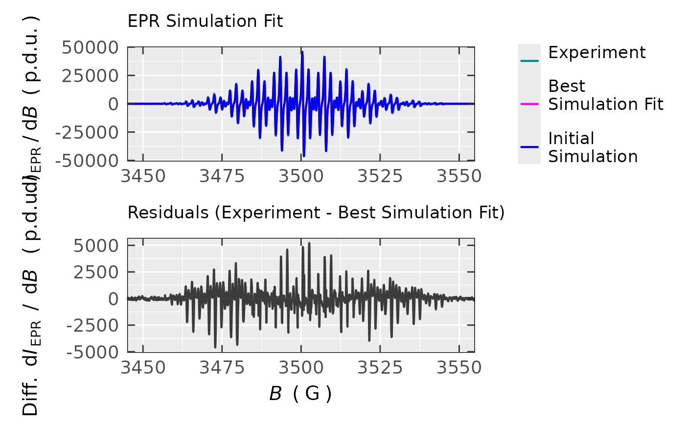
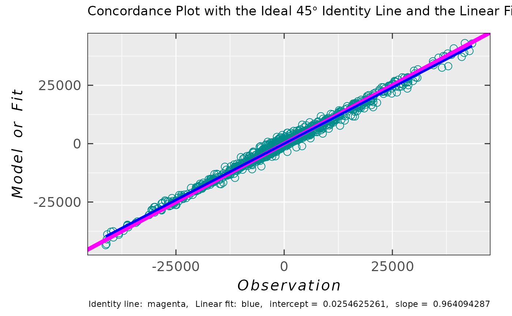

General Ranking of Models/Fits by Concordance Correlation Coefficients and Plot
Source:R/eval_CCC_forFit.R
eval_CCC_forFit.RdEvaluation of the robust and Lin's concordance correlation coefficients (CCCs). A correlation plot
is provided with the \(45\,\degree\) identity line as well as with the corresponding linear fit.
Function can be applied as an agreement metric for the model/fit (y.vec) vs observation/experiment
(x.vec, see e.g. eval_sim_EPR_isoFit). An optional original Bland-Altman plot is available
if check.baplot = TRUE.
Arguments
- x.vec
Numeric vector (points), corresponding to any experiment or computation (observation), which is going to be compared to
y.vec(i.e. its model/fit/simulation). For example this argument can be represented by the points (data frame column/vector) of an experimental EPR spectrum intensity to be fitted or simulated (can be returned by theeval_sim_EPR_isoFitusing theYourlist$ra$df$Experiment). In general, it can be applied to any vector of points/observations to be described by a suitable theoretical model/fit (see they.vecargument).- y.vec
Numeric vector, equal to points of a model/fit of its corresponding
x.veccounterpart. For example, this argument can be represented by points (data frame column/vector) of a simulated EPR intensity fit (can be returned by theeval_sim_EPR_isoFitusing theYourlist$ra$df$Simulation). In general, it can be applied to any model/fit which can reasonably describe the experimental or computational pattern of thex.vec.- check.baplot
Logical. If
TRUE, the original Bland-Altman Plot can be presented as aValuelist component. Default:check.baplot = FALSE.
Value
List with the following components:
- df.ccc
Data frame object with four variables/columns and one row, summarizing the values of the robust
CCCcalculations as well as that of the Lin's one (see alsoDetailsandReferences). EachCCCvalue/column possess explanatory name (therefore it is compiled intodfand not into named vector): "King's exponent \(\delta\) = 1", "King's exponent \(\delta\) = 1.5","King's exponent \(\delta\) = 2 (Approaches Lin's CCC)" and finally "Lin's CCC".- plot.cc
Ggplot2 object function, built to visualize the correlation of both original vectors (
y.vecvsx.vec). In ideal case all data points are perfectly aligned with the \(45\,\degree\) identity/concordance line (with the intercept0and the slope1). In addition, a linear fit is presented for a comparison to identity line. Function controls appearence of the plot: color, size, shape, linewidth and linetype of points and the two lines, separately. See also point and line aesthetics of the{ggplot2}package.- Cb
Numeric value of Lin's
CCCbias-correction factor (accuracy), which measures how far the linear fit line deviates from the \(45\,\degree\) identity line. No deviation occurs whenCb = 1. In general,Cb\(\leq\) 1, whereCb= Lin'sCCC/r, with thercorresponding to Pearson's correlation coefficient.- baplot
If
check.baplot = FALSE(default),baplot = NULL. Otherwise, original (non-robust) Bland-Altman plot is displayed, as a{ggplot2}object, and detects the presence of any systematic bias as well as possible outliers betweenx.vecandy.vec. It actually shows the pairedDifference(with \(95\,\%\) confidence band - the light blue area also known as limits of agreement) vs corresponding pairedMeanvalue of those two vectors.
Details
Correlation between the two continuous random variables (bivariate correlation) is used to analyze their linear relationship
and the most common measure of such correlation/association is expressed by the
Pearson's correlation coefficient (CC). However, when it comes to agreement
between the experiment/observation and its corresponding model/fit (e.g. simulation fit of an experimental EPR spectrum)
usually one has to consider not only the qualitative aspect (EPR spectrum shape similarity) of agreement
but also the quantitative one (i.e. the EPR spectrum intensity). In addition, the Pearson's CC can be sensitive
to outliers and skewness of the variable(s) distribution. Therefore, a more robust agreement indices
were introduced (see below and Valleyos RO (2026) and King TS, Chinchilli VM (2001) in the References.)
The evaluation is based on the widely recognized CCC, developed by Lin (see Lin LIK (1989) in the References),
which, while sharing certain properties with the Pearson correlation coefficient (wide infra), provides a more appropriate measure
of deviation from the \(45\,\degree\) line passing through the origin (with the intercept = 0 and the slope = 1).
This is due to the fact that the CCC accounts for both the magnitude and direction of the deviation from the 45-degree line
in the graphical representation of an agreement. The Lin's CCC is denoted as \(\hat{\rho}_c\) (see also Value
and df.ccc). It can be expressed in the following form:
$$\hat{\rho}_c = 2\,S_{XY}^{}\,/\,(S_X^2 + S_Y^2 + (\bar{X} - \bar{Y})^2)$$
where \(S_{XY}^{} = (1/n)\,\sum_{i=1}^n (X_i - \bar{X})(Y_i - \bar{Y})\), \(S_X^2 = (1/n)\,\sum_{i=1}^n (X_i - \bar{X})^2\)
and similarly \(S_Y^2 = (1/n)\,\sum_{i=1}^n (Y_i - \bar{Y})^2\). \(\bar{X}\) and \(\bar{Y}\) correspond to mean values
of the variables/vectors (refer to the arguments x.vec and y.vec). The Lin's CCC (\(\hat{\rho}_c\))
can be also calculated taking into account the Pearson coefficient \(r\):
$$\hat{\rho}_c = r\,Cb$$
where \(Cb = 2\,/\,(v + (1/v) + u^2)\) with \(v = S_X^{}\,/\,S_Y^{}\) and
\(u = (\bar{X} - \bar{Y})\,/\,\sqrt{S_X^{}\,S_Y^{}}\) (\(S_X^{} = \sqrt{S_X^2}\) and \(S_Y^{} = \sqrt{S_Y^2}\))
denoting as a scale and location shifts, respectively. The \(Cb\) is the correction factor, showing how the
linear fit of y.vec (\(Y\)) vs x.vec (\(X\)) deviates from the \(45\,\degree\)
identity line. Because the Lin's CCC (\(\hat{\rho}_c\)) contains squared distances from the mean values,
it can be sensitive to outliers in the Model/Fit vs Observations (or in the residual analysis).
In order to "robustify" the Lin's CCC, King, Chinchilli and Valleyos (see articles in the References)
suggested a general distance function \(g(z) = |z|^{\delta}\) where the Monte Carlo simulations indicated
that the best performing \(\delta\) (in terms of robustness) are \(\delta = 1\) and \(\delta = 1.5\)
(with \(\delta = 2\) approaching the original Lin's CCC). Such concordance correlation coefficient
can be expressed as follows (proposed by Valleyos RO (2026) see References):
$$\hat{\rho} = 1 - ((1/n)\,\sum_{i=1}^n |X_i - Y_i|^{\delta})\,/\,((1/n^2)\,\sum_{i=1}^n\sum_{j=1}^n |X_i - Y_j|^{\delta})$$
The denominator is the mean distance (\(g(z)\)) across the all \(X,Y\) matrix elements (expectation under independence);
the numerator is the mean distance over matched pairs. Setting \(\delta = 2\) recovers the Lin's CCC;
\(\delta = 1\) gives the robust, outlier-resistant version. The cross pairs are calculated using
outer and the coefficients are evaluated for all three \(\delta = 1\),
\(\delta = 1.5\) and \(\delta = 2\).
McBride GB (2005) (see the References) suggested the following descriptive scale for values of the concordance correlation
coefficient (for continuous variables):
| CCC Value | Strength of Agreement |
| \(< 0.90\) | Poor |
| \(0.90 - 0.95\) | Moderate |
| \(0.95 - 0.99\) | Substantial |
| \(> 0.99\) | Almost perfect |
References
Valleyos RO (2026). "Agreement Coefficients for Continuous Variables: A Review", Environmetric, 37(6), e70117-19, https://onlinelibrary.wiley.com/doi/10.1002/env.70117.
King TS, Chinchilli VM (2001). "Robust Estimators of the Concordance Correlation Coefficient", J. Biopharm. Stat., 11(3), 83-105, https://www.tandfonline.com/doi/full/10.1081/BIP-100107651.
Lin LIK (1989). "A Concordance Correlation Coefficient to Evaluate Reproducibility", Biometrics, 45(1), 255-268, https://www.jstor.org/stable/2532051.
McBride GB (2005) "A proposal for strength-of-agreement criteria for Lin's Concordance Correlation Coefficient", NIWA Client Report: HAM2005-062, https://www.medcalc.org/en/download/pdf/McBride2005.pdf.
Oliveira TP, Moral RA, Zocchi SS, Demetrio CGB, Hinde J. (2020). "lcc: an R package to estimate the concordance correlation, Pearson correlation and accuracy over time", PeerJ, 8, e9850-29, https://doi.org/10.7717/peerj.9850.
Svetunkov I (2022). Statistics for Business Analytics, Version 2025, https://openforecast.org/sba/.
Bulut H, Zobu M, Saglam V (2026). "A High-Breakdown MCD-Based Robust Concordance Correlation Coefficient", Mathematics, 14(1), 196-22, https://doi.org/10.3390/math14010196.
Nguyen M (2020). "A Guide on Data Analysis", https://bookdown.org/mike/data_analysis/.
James G, Witten D, Hastie T, Tibshirani R (2021). An Introduction to Statistical Learning: with Applications in R, 2nd edition, Springer, ISBN 978-1-071-61417-4, https://www.statlearning.com/.
Karun MK, Puranik A (2021). "BA.plot: An R function for Bland-Altman Analysis", Clin. Epidemiol. Glob. Health, 12,100831-3, https://doi.org/10.1016/j.cegh.2021.100831.
See also
Other Simulations and Optimization:
eval_ABIC_forFit(),
eval_sim_EPR_iso(),
eval_sim_EPR_isoFit(),
eval_sim_EPR_isoFit_space(),
eval_sim_EPR_isoFitb(),
eval_sim_EPR_iso_combo(),
optim_for_EPR_fitness(),
plot_eval_EPRtheo_mltiplet(),
plot_eval_RA_forFit(),
quantify_EPR_Sim_series(),
smooth_EPR_Spec_by_npreg()
Examples
## load experimental TMPD radical cation
## EPR data/spectrum
data.file.path <-
load_data_example(file =
"TMPD_specelchem_accu_b.asc")
data.tmpd.expr <-
readEPR_Exp_Specs(
path_to_file = data.file.path,
col.names = c("B_G","dIepr_over_dB"),
qValue = 3500,
origin = "winepr"
)
#
## simulation fit for TMPD radical cation
sim.fit.tmpd.spec <- eval_sim_EPR_isoFit(
data.spectr.expr = data.tmpd.expr,
nu.GHz = 9.814155,
nuclear.system.noA = list(
list("14N", 2),
list("1H", 4),
list("1H", 12)
),
lineG.content = 0.42,
baseline.correct = "constant",
optim.method = "neldermead",
optim.params.init = c(
2.00304,
0.52, 0.51,
0,
3.2e5,
19.62, 5.49, 19.54
),
Nmax.evals = 64,
Blim = c(3450,3550),
check.fit.plot = TRUE
)
#>
#>
EPR simulation parameters are currently being optimized by NELDERMEAD ; method 1 of 1 ...
#>
#>
Done! ( 100 %) elapsed time 6.01 s
#
## EPR spectra comparison
sim.fit.tmpd.spec$plot

#
## experiment + simulation fit concordance
concord.list <- eval_CCC_forFit(
x.vec =
sim.fit.tmpd.spec$ra$df$Experiment,
y.vec =
sim.fit.tmpd.spec$ra$df$Simulation
)
#
## concordance coefficients (CC)
concord.list$df.ccc
#> King's exponent δ = 1 King's exponent δ = 1.5
#> 1 0.924784383 0.978864734
#> King's exponent δ = 2 (Approaches Lin's CCC) Lin's CCC
#> 1 0.993814035 0.993814035
#
## plot
concord.list$plot.cc(point.shape = 1)

#
## accuracy (related to Lin's CCC)
concord.list$Cb
#> [1] 0.999524747
#
## Pearson correlation via Lin's CCC and Cb
concord.list$df[1,4] / concord.list$Cb
#> [1] 0.994286572
#
## Pearson correlations by `cor()`
## function for comparison
sim.fit.tmpd.spec$cor.df()
#> Experiment Simulation Residuals
#> Experiment 1.000000000 0.994286572 0.327746170
#> Simulation 0.994286572 1.000000000 0.225025836
#> Residuals 0.327746170 0.225025836 1.000000000